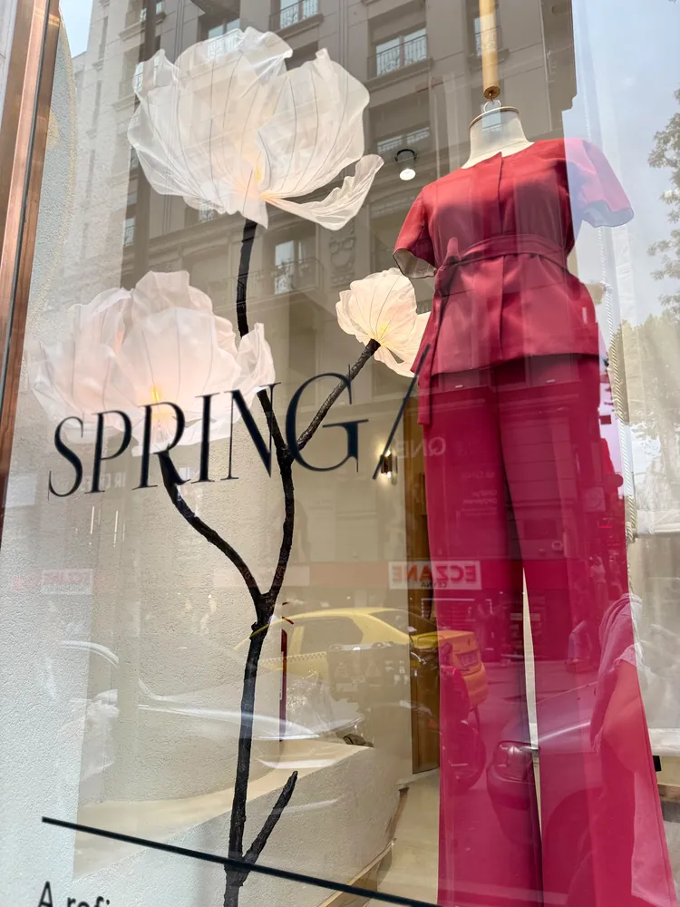

Rehber
Kağıt çiçek mi, kumaş çiçek mi? Nasıl seçilir?
Krapon (kağıt) çiçekler doğrudan güneşten etkilenebilir; tül ve organze (kumaş) çiçekler etkilenmez. Çiçek güneş alan bir yerde duracaksa kumaş, güneşten uzak bir köşede duracaksa kağıt ya da kumaş seçilebilir.
Son güncelleme: · Eden Floral Art

Kısaca fark
| Malzeme | Nedir | Güneşte | Nerede kullanılır |
|---|---|---|---|
| Krapon (kağıt) | Krepon kağıdı | Doğrudan güneşten etkilenebilir; güneşten uzak tutulur | Güneşten uzak mekânlar |
| Tül | Hafif ve uçuşan bir kumaş | Etkilenmez | Güneş alan yerler |
| Organze | Kumaş | Etkilenmez | Lambader ve ışıklı çiçekler |
Üçü de sezona bağlı değildir, istediğiniz renk ve modelde hazırlanır.
Güneş alan yerde hangisi?
Vitrin, pencere önü ya da cam kenarı gibi doğrudan güneş alan yerlerde tül ve organze çiçekleri öneriyoruz, çünkü güneşten etkilenmezler. Kağıt çiçekte tasarım yine mümkündür; ama çiçeğin uzun süre doğrudan güneşte kalmaması gerekir. Mekânınızı yazarsanız malzemeyi birlikte seçeriz. Vitrin için ayrıntıları vitrin tasarımı sayfasında bulabilirsiniz.
Işıklı kullanımda hangisi?
Işıkla buluşan işlerde, yani lambader ve ışıklı vitrin çiçeklerinde organze kullanıyoruz. Krepe kağıttan lambaderler de yapıyoruz; modelleri dev çiçek lambader sayfasında görebilirsiniz.
Nişan ve düğünde hangisi?
Dev çiçek arka fonlarda kumaş ve krapon çiçekler birlikte de kullanılır. Çiçekler doğrudan güneş alacaksa tül ve organze çiçekleri tercih edebilirsiniz; güneşten uzak bir mekânda kağıt çiçek de kullanılabilir. Ayrıntı için nişan süsleme sayfasına bakın.
Bakımda fark var mı?
Üç malzemede de tozlar hafif nemli bir bezle alınabilir. Asıl fark güneştir. Yerleştirme ve temizlik için dev kağıt çiçek bakımı rehberine bakın.
Taze çiçekten farkı
Taze çiçek sezona bağlıdır. Kağıt, tül ve organze çiçekler ise sezondan bağımsız olarak, istediğiniz renk ve modelde, boyu insanı aşan ölçüde tasarlanabilir.
Malzemeyi seçmekte zorlanırsanız renk, tarih ve mekân fikrinizi Instagram'dan (@eden.floralart) yazın, birlikte karar verelim.